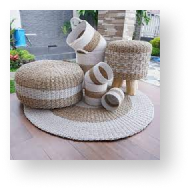
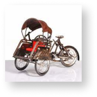

Batik Kawung
Motif batik ini wujudnya menyerupai bulatan yang persis dengan buah kawung (sejenis kelapa atau terkadang disebut dengan kolang-kaling atau aren) yang diatur dengan rapi dan geometris. Motif tersebut terkadang juga dianggap sebagai kembang lotus atau teratai dengan empat lembar mahkota bunga yang mengembang.

Batik Parangkusumo
Motif batik ini bermakna jika suatu kehidupan harus didasari dengan perjuangan untuk mencapai kebahagiaan lahir dan batin, ibarat keharuman kusuma (bunga). Bagi masyarakat Jawa, satu hal yang paling utama dari kehidupan bermayarakat adalah keharuman (kebaikan) pribadinya, tanpa meninggalkan norma-norma yang berlaku dan sopan santun. Manusia harus mematuhi aturan hidup bermasyarakat dan taat kepada perintah Tuhan Yang Maha Esa. Batik tersebut merupakan wujud interpretasi berbagai norma itu.

Batik Truntum
Motif batik ini sebenarnya dibuat oleh Kanjeng Ratu Kencana (permaisuri Sri Susuhunan Pakubuwana III) dari Surakarta. Dia membuat motif tersebut sebagai perlambang ketulusan cinta tanpa syarat, abadi, dan tumaruntum (semakin lian kian subur berkembang).

Batik Ceplok Kembang Kates
Motif ini memakai ide mandasar unsur utama pohon pepeya/kates yaitu bunga dan biji pepayadengan tambahan berupa cecek, isen-isen, putik, dan sawut. Pola susunan batik ini terinspirasi dari motif Prabanegara, yaitu susunan pola ulang diagonal. Warna yang digunakan dalam motif tersebut adalah hijau, merah, dan biru.

Batik Ciptoning
Motif ini biasanya digunakan oleh seseorang yang dituakan atau pemimpin. Pemakainya diharapkan menjadi orang yang bijak dan mempu memberikan petunjuk jalan yang benar kepada orang lain yang dipimpinnya. Makna filosofis di balik motif ini sebenarnya tidak hanya untuk pemimpin saja, tetapi juga setiap orang agar mampu menempatkan dirinya sendiri di tengah masyarakat.

Batik Wahyu Tumurun
Motif batik satu ini merupakan batik yang khusus dipakai dalam acara tradisi orang Jawa yaitu Temu Manten dan acara lain yang kental dengan adat Jawa. Batik ini memiliki makna yaitu agar pengantin baru tersebut senantiasa mendapat anugerah dan dikaruniai keturunan yang soleh.
Rekomendasi
Kerajinan Tangan

Topeng

Wayang

Blangkon

Anyaman

Miniatur
Rekomendasi
Kuliner

Bakpia

Keripik Belut

Geplak

Yangko